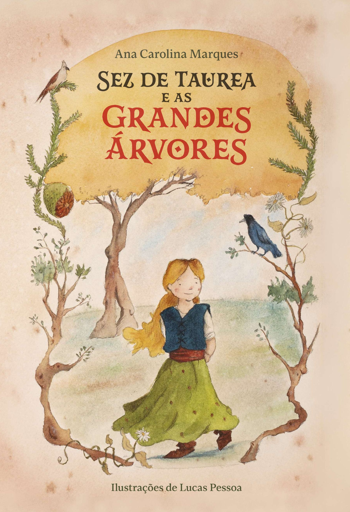

Sez de Taurea e as Grandes Árvores
Uma jornada pelas terras de Taurea está prestes a começar.

Sinopse
Sez é uma menina cheia de coragem e iniciativa. Quando o Conselho das Grandes Árvores acontece em Taurea, ela conhece Aurora, líder das árvores, e passa a sonhar com um feito único.
Durante uma jornada com uma Araucária de quatrocentos anos e um Ipê seco, sem flores, Sez se depara com algo que nunca havia visto. Isso coloca em xeque o que ela conhece do mundo e de seu papel nele. Sez de Taurea e as Grandes Árvores é uma aventura mágica sobre coragem, descoberta e os caminhos que nos mudam para sempre.
Onde ler
Leia o e-book gratuitamente online.
Onde ouvir
Ouça o audiolivro gratuitamente.
Reconhecimento cultural
Sez de Taurea e as Grandes Árvores foi contemplado pela Política Nacional Aldir Blanc de Fomento à Cultura.